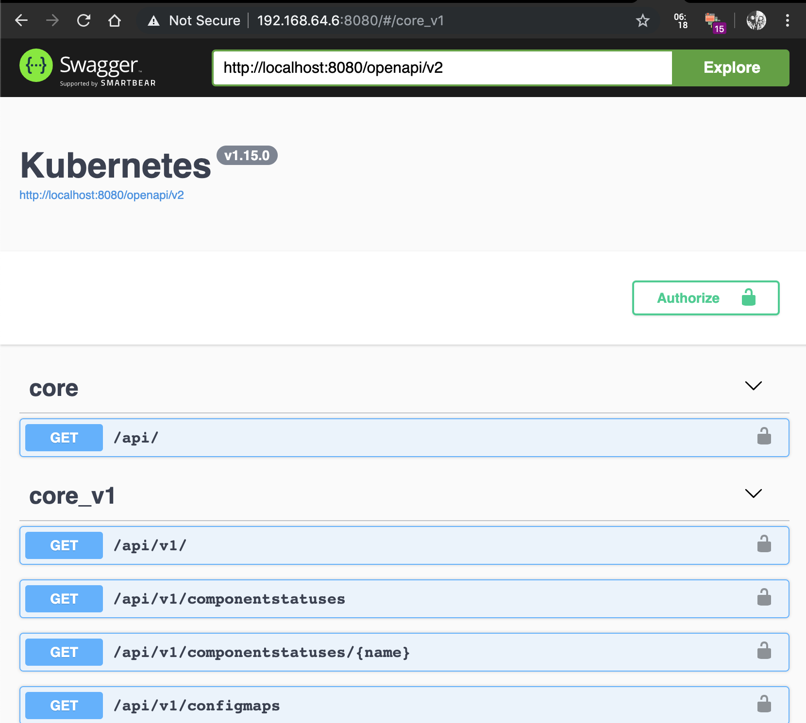

遇到一些莫名其妙的坑填不了就只能绕路走了
版本信息
- minikube v1.2.0
- kubernetes v1.15.0
- macOS v10.14.6
问题
完全按照官方文档和网上的成功案例做了如下配置
对于Minikube，在启动时加入参数 --extra-config=apiserver.enable-swagger-ui=true ，参考了这个回答，但是无效
对于Kubernetes API Server，将其相关的yaml /etc/kubernetes/manifests/kube-apiserver.yaml 文件中添加了启动参数 --enable-swagger-ui=true ，并执行 systemctl daemon-reload && systemctl restart kubelet 重启Kubelet，但是依然无效
证据是，启动了 kubectl proxy --port=8080 之后，访问 http://localhost:8080/swagger-ui/ 无效，且只有如下的一级API接口
1 | { |
但是对于接口 /openapi/v2 ，是可以被外部的swagger应用作为数据源利用的
解决方案
参考了这个Issue下用户的解答
部署Deployment资源，运行swagger应用
1 | kubectl run swagger-ui --image=swaggerapi/swagger-ui:latest |
此时访问集群主节点所在的IP（ minikube ip ），我环境下IP地址为 http://192.168.64.6
访问链接为 http://192.168.64.6:8080，在顶部输入框中输入 http://localhost:8080/openapi/v2 即可
注意可能存在跨域的问题，我解决这个问题的方法为Chrome浏览器安装插件Allow CORS
